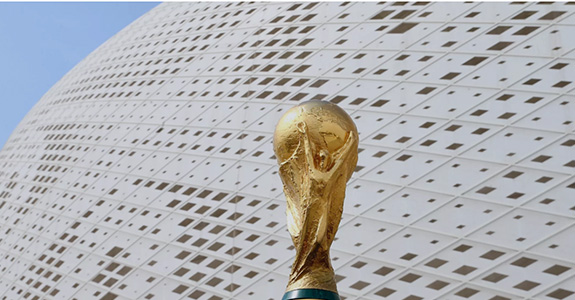

5 curiosidades sobre a Copa do Mundo
Você sabia que há muitas curiosidades sobre o futebol que nem todos têm conhecimento ? A Inglaterra, por exemplo, tem a fama de ter inventado o jogo, porém, apenas criou as regras. Os pioneiros na verdade foram os chineses e japoneses, que já batiam os pés na bola há pelo menos 2 mil anos.
O responsável pela chegada do futebol no Brasil foi Charles Miller, um estudante paulista que retornava da Inglaterra, em 1894, trazendo na bagagem uma bola, uniformes e um livro com as regras. No começo, apenas a elite praticava o esporte. Existia uma relutância em deixar que o futebol se popularizasse. Porém, as barreiras não foram suficientes para impedir a democratização. Aliás, se o futebol continuasse limitado, talvez não pudéssemos dizer hoje que somos uma referência mundial.
1. A primeira Copa do Mundo aconteceu em 1930
Já na primeira edição, realizada no Uruguai, a Copa do Mundo mobilizou multidões de torcedores (que fizeram muito barulho) dentro dos estádios. Na final, havia 93 mil pessoas no Estádio Centenário.